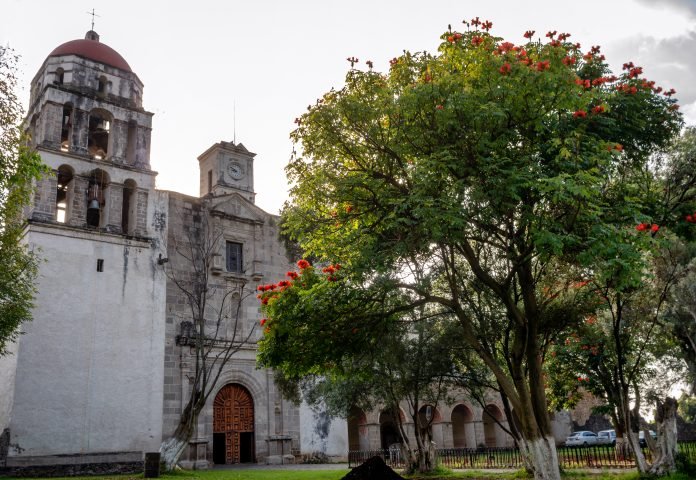

Hay noticias que en Malinalco se sienten distinto. Esta es una de ellas: después de ocho años, el Festival Cultural de Malinalco regresa. Del 16 al 18 de octubre de 2026, el pueblo entero se convierte en un escenario abierto —capillas, plazas, el convento, el jardín— con más de 50 actividades culturales, todas gratuitas.
Para quienes vivimos aquí, este festival no es un evento cualquiera. Es el regreso de algo que se extrañó mucho. Y para quien busca un fin de semana distinto en el Estado de México, es probablemente el mejor pretexto del año para venir. Después de ocho años recibiendo huéspedes en el pueblo, esta es mi guía.
¿Qué es el Festival Cultural de Malinalco?
Es el encuentro artístico más importante del municipio: tres días en los que música, teatro, danza, exposiciones, talleres y callejoneadas toman las calles y los espacios históricos de Malinalco. La edición 2026 —la quinta en la historia del festival— fue seleccionada por PROFEST, el Programa de Apoyo a Festivales Culturales y Artísticos del Gobierno de México, y está organizada por la Secretaría de Cultura y Turismo del Estado de México.
La cifra que lo resume: más de 50 actividades gratuitas repartidas en 11 sedes. No hace falta comprar boleto para nada. Solo llegar, caminar el pueblo y dejarse llevar de una capilla a un concierto, de un taller a una callejoneada.
Un regreso que tomó 8 años
El Festival Cultural de Malinalco tuvo ediciones en 2014, 2015, 2016 y 2018. Después, silencio. Ocho años de pausa que lo convirtieron casi en un recuerdo para muchos vecinos. Su regreso en 2026 es, por eso, mucho más que una fecha en el calendario: es la recuperación de una tradición cultural que el pueblo daba por perdida.
Las autoridades esperan una afluencia de entre 25 mil y 40 mil personas durante el fin de semana. Para dimensionarlo: será uno de los momentos de mayor movimiento del año en Malinalco, comparable a las grandes fiestas patronales. Eso tiene una consecuencia práctica que no conviene ignorar —hablaremos de ella más abajo.
Entre las más de 50 actividades destaca la obra de teatro "Malinalxóchitl, la sublimación de un destino", dirigida por Juan Carlos Embriz y programada para el sábado 17 de octubre. La pieza aborda la figura de Malinalxóchitl —la diosa-hechicera que da nombre y origen al pueblo— y elementos de la tradición local. Un lujo verla representada en el mismo lugar de la leyenda.
Qué esperar cada día
El programa oficial se libera conforme se acerca la fecha, pero el festival está pensado como un fin de semana completo. Así se vive, a grandes rasgos, cada jornada:
La distribución por día es orientativa: la Secretaría de Cultura y Turismo publica el programa detallado con horarios y sedes en las semanas previas al festival. Lo confirmado es la fecha —16, 17 y 18 de octubre—, el carácter gratuito y las más de 50 actividades. Escríbenos por WhatsApp y con gusto te compartimos el programa oficial en cuanto salga.
Lo imperdible del festival

Las 11 sedes: el pueblo entero como escenario
Lo mejor del festival es que no se concentra en un solo recinto. Las actividades se reparten por 11 sedes, muchas de ellas monumentos históricos que valen la visita por sí mismos:
- Convento Agustino (Convento de la Transfiguración, siglo XVI) — conciertos y exposiciones bajo sus arcos.
- Parroquia del Divino Salvador — el corazón religioso del pueblo.
- Capillas de San Juan, Santa Mónica y Santa María — presentaciones íntimas en los barrios.
- Museo Luis Mario Schneider — exposiciones y conferencias.
- Casa de Cultura Malinalxóchitl y Teatro Municipal — el epicentro de talleres y teatro.
- Explanada Cívica y Jardín — los grandes conciertos y las callejoneadas.
Las 11 sedes están dentro del centro histórico, a poca distancia entre sí. Si te hospedas con nosotros, estás a pasos de casi todas. Malinalco se disfruta caminando: deja el coche estacionado y recorre el festival sin prisas.
Consejos para vivirlo bien
Mi consejo de anfitrión: no intentes ver las 50 actividades. Elige tres o cuatro que te llamen —la obra de teatro, un concierto, una callejoneada— y deja huecos para lo que ningún programa anuncia: perderte por las calles, entrar a una capilla por curiosidad, sentarte a comer sin reloj. Ese es el verdadero festival.
Con una afluencia esperada de hasta 40 mil personas en un solo fin de semana, el hospedaje en Malinalco se llenará rápido. Cada vez que hay un evento grande recibimos solicitudes de última hora que ya no podemos atender. Si piensas venir al festival, el momento de reservar es ahora.